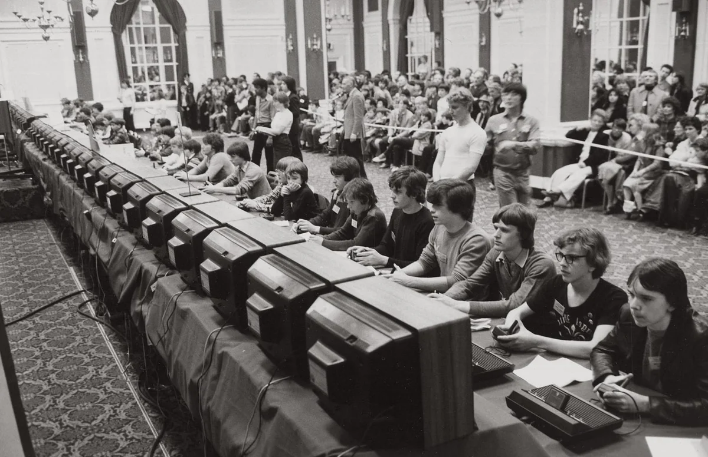
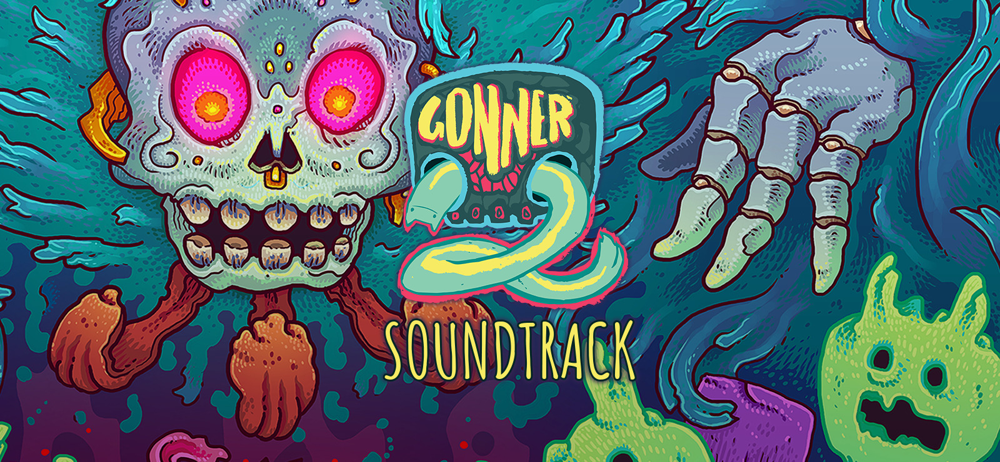
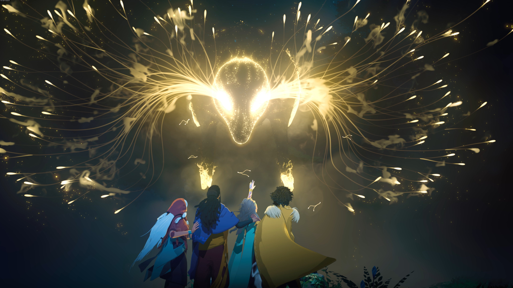

На нашем сайте вы сможете найти новости из мира видеоигр, интеренсные истории а так же многое другое!
Game Portal
Все о видео играх


Все о видео играх
На нашем сайте вы сможете найти новости из мира видеоигр, интеренсные истории а так же многое другое!
История компьютерных игр начинается в 1940-х и 1950-х годах, когда в академической среде разрабатывались простые игры и симуляции. Компьютерные игры длительное время не были популярны, и только в 1970-х и 1980-х годах, когда появились для широкой публики аркадные автоматы, игровые консоли и домашние компьютеры, компьютерные игры становятся частью поп-культуры.
Появлению коммерческих компьютерных игр предшествовала уже сложившаяся индустрия развлекательных аркадных автоматов наподобие пинбола — механических игр, для запуска которых требовалось бросить монетку в щель приемника. Такие автоматы выпускались с XIX века, используя всё более сложные механизмы, а с 1930-х годов и электричество; параллельно развивались и музыкальные автоматы-«джукбоксы». Примечательным и необычайно сложным для своего времени аркадным автоматом стал Nimatron — электромеханический компьютер для игры в ним, спроектированный физиком Эдвардом Кондоном и выставленный на Всемирной выставке 1939-1940 годов в Нью-Йорке. В 1947 году было запатентовано «Развлекательное устройство на основе электронно-лучевой трубки» Томаса Голдсмита и Эстла Манна – оно считается первым специально предназначенным для игры устройством, выводившим изображение на экран, то есть «видеоигрой».
В начале 1950-х годов создавались специализированные компьютеры наподобие Nimrod опять же для игры в ним и Bertie the Brain и OXO для игры в крестики-нолики. Tennis for Two, разработанная физиком Уильямом Хигинботамом, имитировала игру в теннис с графическим интерфейсом, используя аналоговый компьютер и осциллограф как средство вывода в реальном времени. В 1948—1950 годах Алан Тьюринг и Дэйвид Чампернаун (англ.)рус. разработали алгоритм шахматной игры, однако компьютеры того времени были недостаточно мощными, чтобы реализовать этот алгоритм. Британский журналист Тристан Донован в книге Replay: The History of Video Games описывал 1950-е годы как «десятилетие фальстартов», единичных устройств, созданных в единственном экземпляре для выставок и разобранных позже — создатели этих устройств отбрасывали идею компьютерных игр как пустую трату времени.
GONNER2 – платформенный проект, дополненный элементами жанра шутер, где присутствует динамичный игровой процесс и масса непредсказуемых событий. Визуальная стилистика игры уникальна, наделена яркими элементами и приятной анимацией, что точно порадует любителей жанра. Возьмись за исполнение роли отважного героя и постарайся дать отпор всем, кто посмеет встать на пути. Одним из положительных аспектов стоит отметить наличие нелинейных уровней, что делает игру ещё более интересной, но в то же время и более сложной. Познакомься с главным персонажем приключения – Ииком, который является протагонистом, обладает особой отвагой и бесстрашием.
Главная задача Иика заключается в помощи самой Смерти, в логове которой поселилось странное существо, разрушающее все на своем пути. Тебе нужно исследовать место действия вдоль и поперек, обращая внимание даже на мельчайшие детали, стараясь раскрыть секреты и дать отпор главному сопернику. Подготовь боевой арсенал, ведь впереди тебя ожидает не малое количество сражений с врагами, преграды и опасности. Развивай навыки и способности Иика, что позволит ему быстрее добиться положительного результата.
Everwild - приключение, шутер от третьего лица, открытый мир от Rare, известной нам как разработчик Sea of Thieves. Предполагается, что в игре наш герой будет исследовать фантастический мир и будет иметь возможность взаимодействовать с животными. Из-за отсутствия других деталей это и все о чем возможно заявить сейчас.
Senua's Saga: Hellblade 2 — продолжение Hellblade: Senua's Sacrifice для консоли нового поколения Xbox Series X. Как и прежде, вам предстоит прожить историю воинственной Сенуа, которая вновь покоряет мрачный мир, и она явно чем-то опечалена. Оригинальную Hellblade: Senua's Sacrifice хвалили за убедительный сюжет и инновационное использование захвата движения. История рассказывала о Сенуа, воине-пикте, которая должна победить потусторонних существ, чтобы спасти душу своего мертвого мужа от богини Хелы. По мере прохождения главную героиню одолевает психоз. Внутренние голоса разрывают душу Сенуа, но она продолжает свой путь не смотря ни на что.

Новый проект от Blizzard предложит как новые PvP, так и новые PvE режимы. Пример первого — новый симметричный режим «Натиск», а второго — «совместные задания». Overwatch 2 предложит: новых героев, новые карты обновленный интерфейс и движок игры. В игре будут улучшены атмосферные эффекты и тени, а герои получат новый внешний вид, отличающийся повышенной детализацией. И Overwatch, и Overwatch 2 будут использовать один клиент. В обоих играх будут одни и те же карты и герои — сегментации в мультиплеере не будет. Одновременно с этим, покупка Overwatch 2 перенесет косметические предметы с текущего игрового профиля. С точки зрения истории PvE режим игры будет происходить происходит после общего сбора, инициированного Уинстоном. В PvE миссиях у героев будет некая система талантов, улучшающая их способности, а вместе с ней и система уровней с опытом. В миссиях также будут присутствовать подбираемые предметы, которые будут давать различные эффекты (например, исцеление).